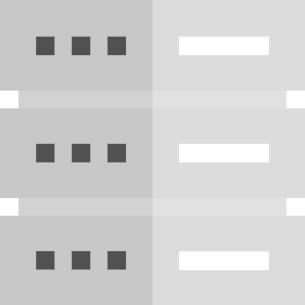

Earth Observation Research Cluster
[EORC]
eo2cube
Earth Observation Data Cubes of the
University of Würzburg
About the Project
What is eo2cube?
Digital tools for environmental monitoring require a high degree of flexibility, a wide application range and user-friendliness. The next generation of data analysis and visualization, as well as the management and infrastructure of large volumes of EO Data, are cloud-based Data Cubes.
The eo2cube project aims to create an innovative data analysis infrastructure, supporting agencies and scientific institutions by reducing the complexity and effort that comes with processing Big Data.
Our Data Cubes are powered by the Open Data Cube architecture.

Our Projects
Explore our ongoing and past datacube activities across Africa and Europe.
Read MorePartners & Affiliations
Our Affiliations
Remote Sensing Department
University of Würzburg in collaboration with the Earth Observation Center at the German Aerospace Center (DLR-EOC).

The Remote Sensing Department's News Blog
Stay up to date on the latest activities, research projects and positions at the Remote Sensing Department of the University of Würzburg.